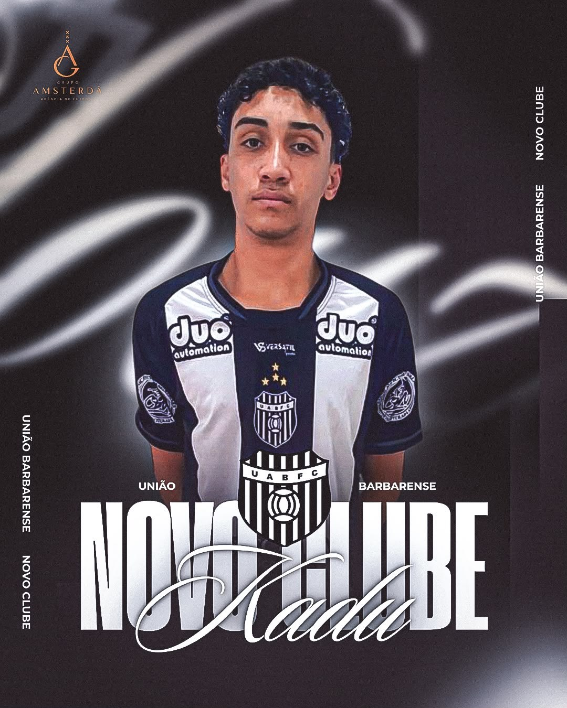

FUTEBOL · PERFIL DO ATLETA
CARLLOS
EDUARDO.
Carllos Eduardo Rodrigues da Costa
Meia esquerda, atualmente atuando pelo União Agrícola Barbarense Futebol Clube, de Santa Bárbara d’Oeste (SP). Da formação nas escolinhas aos campeonatos de base, uma trajetória registrada dentro e fora de campo.

CARLLOS EDUARDO / EM FOCO01 / TRAJETÓRIA
O caminho no futebol.
Formação e passagens informadas por escolinhas e clubes do futebol brasileiro.
ER Escolinha
Real Brasília Futebol Clube
Sociedade Esportiva Gama
Sociedade Esportiva Ceilandense
União Agrícola Barbarense Futebol Clube
Santa Bárbara d’Oeste (SP)
02 / COMPETIÇÕES
Experiência em campo.
Candangão Sub-17
Temporadas 2025 / 2026
Candangão Sub-20
Temporadas 2025 / 2026
Paulista Cup
Temporada 2026
Campeonato Maracanã
Campeonato Gávea
03 / GALERIA
Dentro e fora das quatro linhas.
Jogos, apresentações e registros da trajetória.
04 / VÍDEOS E REDES
Acompanhe o Carllos.
Assista ao vídeo do atleta e acompanhe suas publicações no Instagram.
Ver perfil no Instagram